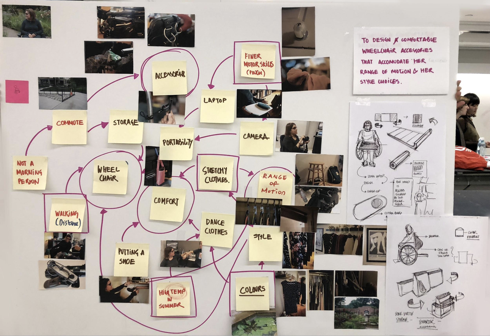
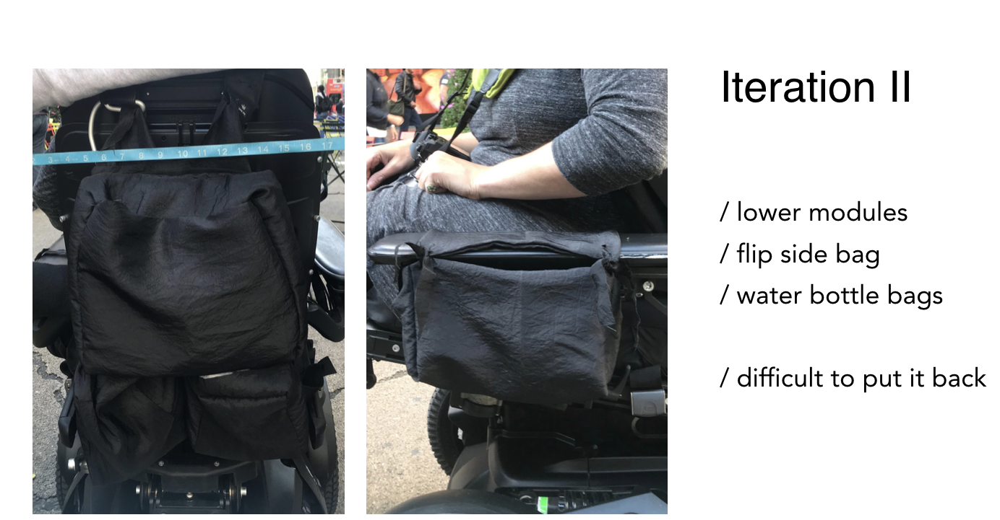
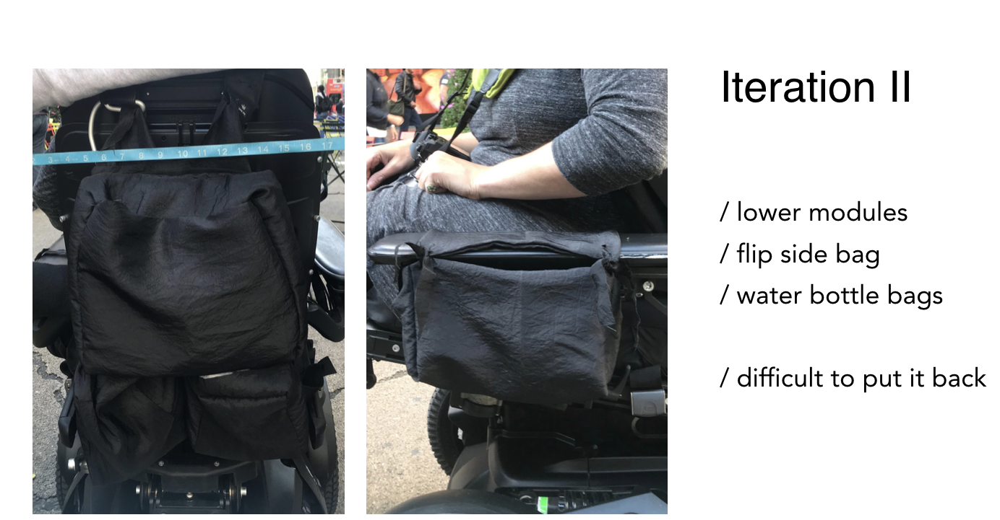

In the Open Style Lab class, we were divided into groups to meet our clients with disability. We tried to use different user research methods to find problems in clients' lives and iterate prototypes for a wearable product that can be functional as well as stylish.
I'm the user researcher and experience designer in the group.
Colleen Roche is an activist, health educator and always on the move. She works from home and travels throughout New Jersey to deliver training sessions.
Colleen is born with cerebral palsy. She is an active wheelchair user and has travelled approximately 1500 mi in her powerchair, Isaac over the last two years. Functionally Colleen is non-ambulatory, her chair is a secondary skeleton, her most visible and valuable accessory that she spends 14+ hours per day.
We met at Colleen's home, visiting her living environment. Through interviewing and observing, we got familiar with each other and found some innovative hacks made by herself, as well as problems she was facing.
After collecting materials, we built a moodboard for Colleen to analyze the main problem.
To design comfortable wheelchair storage accessories that accommodate Colleen’s range of motion and style choices.
/ electric wheelchair
/ comfort
/ bags and storage
/ range of motion
 

Gradually, we felt we were trying to solve all the problems at once, which was hardly to be successful.
Depending on the data that colleen provided, I made a user journey map for our team to rethink main focus point. After that, we realized the most important thing was the sidebag, which stored all essential products she need to use everyday. So we dicided to focus on that one piece of accessory.

1 - shape that can accommodate varied sizes of armest allowing to slide the bag on/ off easily 2 -buckle that can convert the powerchair side bag into a cross-body 3 - small pocker to store pens/ chapstick 4 - accordion fold for easy access 5 - metrocard/ credit card holder 6 - small zip stopper 7 - double velcro enforcement for durability 8 - rings for an easy grup 9 - zip loops for Colleen to grab for smooth closing of the zip 10 - outer pocket for the cellphone.
wheelchair bag & shoulder bag